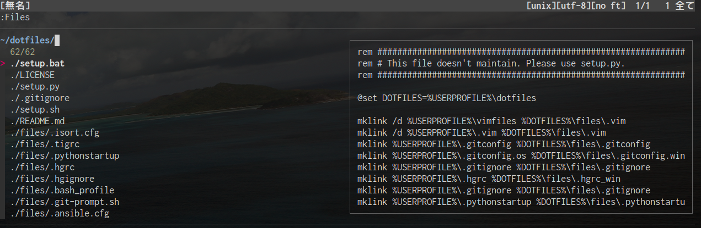
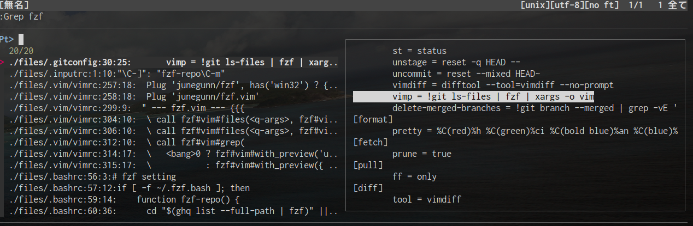
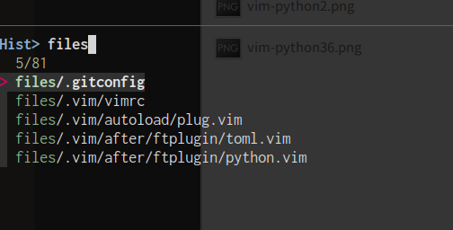
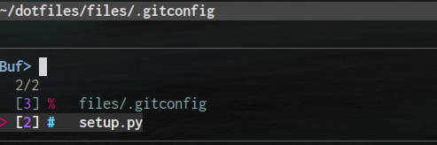
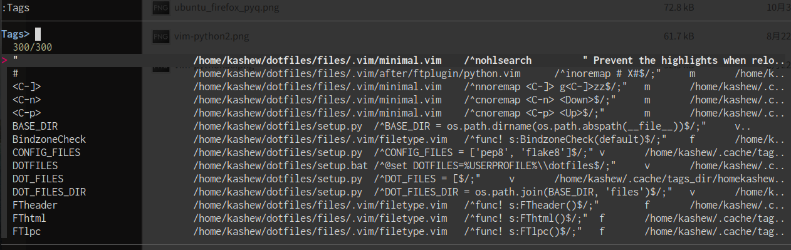
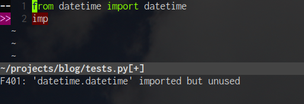

Pythonの補完環境をjedi-vimからvim-lspに移行した話
VimでPython書いてますか？
長らくPythonの補完用プラグインとして davidhalter/jedi-vim を使用してきましたが、 あの mattn (@mattn_jp) さんがCollaboratorになった prabirshrestha/vim-lsp や palantir/python-language-server がいよいよ実用的になってきたので移行してみました。
とはいえ実際に使うにはまだ設定するところもちょこちょこあるので、一度まとめておこうと思います。
前提とする環境
- Vim: 8.0以上、かつコンパイルオプションで jobs, timer, channel, lambda が有効になっている
- Python: 2.7もしくは3.4以降 (pyenvやAnacondaでインストールしたPythonは考慮しない)
Note
VimでPython/Python3インターフェースを有効にする必要があるかもしれませんが、少なくともドキュメントには記載されていませんでした。 もし必要な場合は以前書いた VimとPythonの補完についてのメモ を参照してください。
LSP(Language Server Protocol)とは
ざっくりいうと自動補完や定義ジャンプ、ドキュメントのホバー表示などエディタごとに実装していた機能を、言語Serverを用意して複数の開発ツールで使えるようにしましょうというものです。LSPを活用することでエディタのプラグインなどは最小限の労力で言語をサポートできるようになります。
各エディタ用にLSPを使うプラグインや機能を用意する必要がありますが、補完機能をサポートするサーバーが共通化できるのでそのServerが便利になると1つのエディタだけでなく複数のエディタで活用できるメリットがあります。
どのようなプロトコルでどのように通信しているのかは、 Microsoftが公開しているドキュメント が詳しいのでそちらを参照してください。 Software Design 2018年3月号 にも詳しく書いています。(残念ながら紙の書籍は2019/01/26現在在庫がないようです)
LSP導入
Python用のLanguage ServerとClientとなるVimプラグインを導入します。ServerとClientは以下になります。
- Language Server: palantir/python-language-server
- Client: prabirshrestha/vim-lsp
Language Serverの導入
python-language-server をpipコマンドを使ってインストールします。 どこからでも使えるようにグローバルな環境に入れますが、macOSやLinuxを使っている人は注意する必要があります。 OSが使うPythonに様々なライブラリが入っており、無理やりインストールしようとすると後で困る可能性があるからです。
ここではユーザーディレクトリにインストールすることでその問題を回避します。 以下のPATHにインストールされるので、予め ~/.bash_profile などに PATH の設定を追加しておいてください。 インストールされる箇所は site.USER_BASE によって決まります。
- Windows: %APPDATA%\Python
- macOSで www.python.org からPythonをインストールした場合: ~/Library/Python/X.Y/bin (X.YはPythonのバージョン)
- macOSでHomebrewを使いPythonをインストールした場合: ~/.local/bin
- Ubuntuの場合: ~/.local/bin
ターミナルを開き以下のコマンドを使いインストールします。
$ pip install --user python-language-server
インストールが完了したら $ which pyls などでLanguage ServerにPATHが通っていることを確認してください。 インストールに失敗したり、whichコマンドで何も出力されない場合、 PATH の設定がうまく言っていない可能性があるので確認してみてください。
pipコマンドを実行した結果でもわかりますが、 python-language-server はこれまでもPythonの自動補完や静的解析で使われていた davidhalter/jedi をLSPで使えるようにしたものです。フォースの魂は脈々と受け継がれるようですね。
Clientの導入
vim-lspは依存で prabirshrestha/async.vim が必要なので合わせてインストールします。 私は junegunn/vim-plug を使用しているので、以下のようにvimrcに記述します。
" vimrc
Plug 'prabirshrestha/vim-lsp'
Plug 'prabirshrestha/async.vim'
Vimを開いたまま :so $MYVIMRC のようにして設定の変更を読み込み、 :PlugIntall するとプラグインをインストールできます。
Vimプラグインの設定
ServerとClientとなるVimプラグインは導入しましたが、実際に連携するには設定が必要です。以下のようにvimrcに追記します。
" vimrc
" デバッグ用設定
let g:lsp_log_verbose = 1 " デバッグ用ログを出力
let g:lsp_log_file = expand('~/.cache/tmp/vim-lsp.log') " ログ出力のPATHを設定
" 言語用Serverの設定
augroup MyLsp
autocmd!
" pip install python-language-server
if executable('pyls')
" Python用の設定を記載
" workspace_configで以下の設定を記載
" - pycodestyleの設定はALEと重複するので無効にする
" - jediの定義ジャンプで一部無効になっている設定を有効化
autocmd User lsp_setup call lsp#register_server({
\ 'name': 'pyls',
\ 'cmd': { server_info -> ['pyls'] },
\ 'whitelist': ['python'],
\ 'workspace_config': {'pyls': {'plugins': {
\ 'pycodestyle': {'enabled': v:false},
\ 'jedi_definition': {'follow_imports': v:true, 'follow_builtin_imports': v:true},}}}
\})
autocmd FileType python call s:configure_lsp()
endif
augroup END
" 言語ごとにServerが実行されたらする設定を関数化
function! s:configure_lsp() abort
setlocal omnifunc=lsp#complete " オムニ補完を有効化
" LSP用にマッピング
nnoremap <buffer> <C-]> :<C-u>LspDefinition<CR>
nnoremap <buffer> gd :<C-u>LspDefinition<CR>
nnoremap <buffer> gD :<C-u>LspReferences<CR>
nnoremap <buffer> gs :<C-u>LspDocumentSymbol<CR>
nnoremap <buffer> gS :<C-u>LspWorkspaceSymbol<CR>
nnoremap <buffer> gQ :<C-u>LspDocumentFormat<CR>
vnoremap <buffer> gQ :LspDocumentRangeFormat<CR>
nnoremap <buffer> K :<C-u>LspHover<CR>
nnoremap <buffer> <F1> :<C-u>LspImplementation<CR>
nnoremap <buffer> <F2> :<C-u>LspRename<CR>
endfunction
let g:lsp_diagnostics_enabled = 0 " 警告やエラーの表示はALEに任せるのでOFFにする
vim-lspは警告やエラーの表示などもできますが、そちらは w0rp/ale に寄せているため機能を無効化しています。 ALEについては 2018年版Life ChangingだったVimプラグインTOP3 に書きましたのでそちらを参照してください。
vimrcに記載したら保存、終了します。
使用感について
jedi-vimと比べたときのメリット/デメリットを書いていきます。
メリット
高速化されたのが一番大きいですね。
- Vimの起動が高速化できた(Ubuntu環境で100〜150ms、macOS環境でも200〜300ms短縮)
- 補完候補がでる時間が高速化できた
- 発展途上の技術なので進化を体験していける
- 他の言語と使用できるプラグインを共通化できるため、vimrcからプラグインを減らせた
デメリット
まだ発展途上というところからきてると思うのですが、少しだけ今までできていたことができない感じがあります。
- 言語用のServerが別途インストールが必要なので環境を壊さわないようにするのに気を使う。
- jedi-vimはjediを git submodule で独立して入れていたので楽だった。
- Vimを起動後に :setf python しても補完や定義ジャンプが動かない。
- 既存のPythonファイルを開いたり、 $ vim hoge.py などすると動くが、少し気になる。
- リネームが不安定(動かない？)
- Cannot LspRename / Issue #218
- 動かすには python-rope/rope が必要という情報もあるがそれでも動かない
- jedi-vimはじゃじゃ馬だったり、マルチバイト文字が対象行に混じっていると動かなかったりしたが….
終わりに
自動補完(オムニ補完)や定義ジャンプの使い方は変わらないですし、仮想環境(venv/virtualenv)にも対応しています。 リネームに関してはropeよりjediに統一したほうがよいのでは？と思ったりしますが、現状リネームに関してはさほど気にしていない感じです。 今後LSPが進化していって、安定して高速な開発環境ができていくといいなぁと期待しています。
2018年の振り返りと2019年抱負
2018年の総括
https://twitter.com/kashew_nuts/status/1079732019314081792
だいたいこんな感じでしたが、せっかくなのでちょっと細かく見ていきたいと思います。
健康面
- 怪我はなかった。クライミングが数週間や数ヶ月できなくなるレベルでは。
- しかし歯医者は1年で34回いったので月に3回近く通っていました。
開発面
引き続きPython x Djangoの組み合わせで開発をしています。去年はDjango REST frameworkを使い始めました。 一昨年に比べて去年は以下のようなことを考えることが多かったように思います。
- どの技術やアーキテクチャを採用するのか
- なぜその技術・やり方を選択するのか
- 一度選択したものをどのように良くしていくのか
- チームメンバーにどのように仕事をしてもらうと全体がよくなるのか
- 上記をどうやって伝えていくか・継続していくか
そもそもの理解が足りていないためきっちり応えられなかったり、 全体を見る機会をもっと早めに作れたのにそれを選択しなかったがために後でしっぺ返しを食らったりしていた気がします。
普通に開発してると足を止める暇がなくなるので、「足を止めて振り返ったり、現状がどうで今後どうしていくことを考える機会をつくる」のがいいのだろうなと思いつつ、それをはじめて継続するにはどうしたらいいのかなと思う今日この頃です。
書籍執筆・レビュー
初の執筆を経験した年でした。
- 6月に、共著で執筆していたPythonプロフェッショナルプログラミング第3版が出版されました。
- プライベートでは後半にレビューに1件かかわらせてもらってるが、スケジュールが変更されたそうなので2019年にリブート会をするらしいです。
クライミング
さらなるレベルアップには日々の行動を変えないとなーという感じですね。
- アメリカのヨセミテ国立公園でクライミング漬けの1週間を過ごしました。なんという幸せ。次は2週間くらい行きたい。
- Blogはこちら ヨセミテツアー日記 — kashew_nuts-blog
- 国内でも瑞牆でキャンプデビューしたり、小川山、御岳にいったりしました。
- 成果は初段 1本、1級3本、2級 2本, V5 2本, V4 1本
- ジムでのクライミングも週1〜2回ぐらいのペースで通っていた気がします。
- 3年連続初段は1本らしいので、もうちょっと落とせるようになりたいですね。
発表とか
- PyCon KyushuやPyConJPというカンファレンスの場での発表実績も解除できました。Blogは以下。
- 何度かメンターをしている Python入門者の集い でも発表しましたね。
Blog
毎月1本….というわけではないですが、計15本の記事を書きました。
個人活動的な
計29回。多いのか少ないのかはわからないですが、2019年は外岩シーズンのイベントは参加は控えるかもしれない。
けれどもなんかしらの行動につながる会への参加はしていきたいですね。
- Sphinx + 翻訳 Hack-a-thon 開発合宿
- Python mini Hack-a-thon
- BPStudy
- Pythonもくもく会 第24回, 第29回
- Pythonもくもく自習室(書き初め) #6 @ Rettyオフィス
- DjangoCongress JP 2018
- くろのて勉強会 #7 Miyadaiku でブログを作ろう！
- PyCon Kyushu 2018 Fukuoka
- Python入門者の集い #7
- Pythonプロフェッショナルプログラミング 第3版 読書会 #pypro3 #2, #3, #4, #5
- 【Stapy x MUFG共催】Python Global Meetup （同時通訳あり）
- PyCon JP 2018
- #pycamp 講師練習会
- Python Boot Camp in 仙台
- Python入門者向けハンズオン #8
- SphinxCon JP 2018
購入したものとか
買ってよかったなーと思うのを厳選するなら以下の5つ。
- Inspiron 13インチ 7000シリーズのフルスペック版: 現在はUbuntuデスクトップで運用

- Apple iPhone XR 128GB: 色はコーラルを選択。6sからの乗り換え。バッテリー持ちの良さは安心

- Amazon Kindle Paperwhite: 読書が捗るけど、PDFはA4が多いから向かないですね….

- Anker PowerCore Fusion 5000: プラグ搭載型なので移動時の持ち物が減って便利

- Cable Matters USB C to DisplayPort 変換アダプター: Ubuntuデスクトップでも4K対応

2019年の抱負
優先度が高いのは絞らないと10、20と並んでいくので3つ書きます。
開発面
変わらずサーバーサイドの開発をしていくと思いますが、どうやったらチーム全体が(結果自分が)「楽に」目的に集中していけるかを追求できたらいいかなと思ったりしています。ふわっとしてますが。
クライミング
外岩で初段5本完登ですかね。12月にネタを仕込めたのでそのための「練習」をしていきます。 具体的には良いフォームで登ることと、それを高いグレードでも可能にするための身体づくりですね。
健康面
大きな病気や怪我がないように。歯医者も虫歯での通院をなくす。結果他に回せる時間が増えると思うので。
終わりに
まずはじめて、それを習慣化していくしかないかなーと思うので2019年はそれを増やしていきたいですね。
2018年版Life ChangingだったVimプラグインTOP3
これは BeProud Advent Calendar 2日目の記事です。
こんにちは。がっつりPythonで開発するにはPyCharmがほしいけど、テキストの編集時にはやはりVimを使うkashew_nutsです。
今回は2018年に使い始めてLife ChangingだったVimプラグインを3つに絞って紹介します。
前提とする環境
自分が普段使っている以下の環境が前提としています。
- OS: macOS (Sierra)、Ubuntu18.04LTS
- Vimのバージョン: 8.0以上
- Pythonのバージョン: 3.6.x
- Vimプラグインマネージャー: junegunn/vim-plug: Minimalist Vim Plugin Manager
junegunn/fzf.vim: Fuzzy Finder
インタラクティブ(対話的)にファイル・タグ・文字列を一覧に出力して、あいまい検索してくれるツールです。 他によく聞くツールだと ctrlpvim/ctrlp.vim やより汎用なツールを謳う Shougo/denite.nvim があります。

fzf.vim を使う理由
個人的に fzf.vim を使う理由は以下の3つです。
- Vim scriptとGolangで動くため、Vimの外部インターフェイスの依存がない
- 検索処理をGolang製のコマンドラインツール(junegunn/fzf )を使うので速い
- grepやctagsのようなVimがよく使う外部コマンドを拡張した使い方ができる
fzf.vim は同作者が作る fzf を使う上でのラッパーなので、 fzfのみを使うことも可能です。しかしデフォルトの設定があると便利なので使用しています。
実行に必要な環境
サポートしてるバージョンはVim7.4以上です。
インストール方法
vim-plugを使用していれば以下のように追加します。
" Windowsの場合は別途手動インストール
Plug 'junegunn/fzf', has('win32') ? {} : {'dir': '~/.fzf', 'do': './install --all' }
Plug 'junegunn/fzf.vim'
よく使うコマンド
最初は Files を使うだけでも快適さの一片を味わえるかと思いますが、現在よく使うのは次の5つです。
- Files: カレントディレクトリ以下のファイル一覧を表示。一覧から選択したファイルを表示できる。
そのままでも便利ですがプレビュー画面を有効にするため、vimrcに以下の設定を記述しています。
" ファイル一覧を出すときにプレビュー表示
command! -bang -nargs=? -complete=dir Files
\ call fzf#vim#files(<q-args>, fzf#vim#with_preview(), <bang>0)
- Grep: 自分で定義したgrepコマンドの拡張。プレビューしながらインタラクティブにgrep検索できる。

ag は や Ag コマンド、 ripgrep は Rg コマンドをデフォルトで持っているのですが、 自分が普段使う pt はコマンドを持っていないので以下のように定義して使っています。
" https://blog.fakiyer.com/entry/2017/08/06/222936
function! s:find_git_root()
return system('git rev-parse --show-toplevel 2> /dev/null')[:-2]
endfunction
" 外部コマンドptを使用してプレビューしながらgrep検索する
command! -bang -nargs=* Grep
\ call fzf#vim#grep(
\ 'pt --column --ignore=.git --global-gitignore '.shellescape(<q-args>), 1,
\ <bang>0 ? fzf#vim#with_preview('up:60%')
\ : fzf#vim#with_preview({ 'dir': s:find_git_root() }),
\ <bang>0)
- History: 最近開いたファイルと現在開いているバッファを表示できる。

- Buffers: 現在開いているバッファを表示できる。

- Tags: プロジェクト内でタグ生成から検索までできる。

w0rp/ale: 非同期Linter/Fixerエンジン
ALE は Asynchronous Lint Engine の略です。Vimの快適な編集を邪魔することなく、コードチェックができます。 ALEは2018/12/01時点で110もの言語に対応しているので、Pythonに限らずBashやMarkdown、JSONなどにも使えます。
実際に使用しているイメージは以下の図のようになります。

CI実行時にFlake8やmypyのようなツールを使うよう環境は整えたりはよくすると思いますが、 CIの実行を待たずにVimで編集中に実行できるようにしたかったのでALEを導入しました。
実行に必要な環境
サポートしてるバージョンはVim8以上です。 またVimコンパイルオプションで job, channel, timers が有効になっている必要があります。
自分のVimが対応してるかどうかはVimを立ち上げて :version コマンドを実行し、 各オプションが +(有効) になっていることを確認してください。
インストール方法・使い方
vim-plugを使用していれば以下のように追加します。
Plug 'w0rp/ale'
しかしALEはこれだけでは真価を発揮できません。自分が使いたいコードチェックやフォーマット用のツールを用意します。 普段自分はPythonを書くときに Flake8 や mypy でチェックするのでこちらをPythonの仮想環境上にインストールします。
$ python3.6 -m venv venv
$ source venv/bin/activate
(venv) $ pip install flake8 mypy
Collecting flake8
.... # Flake8やmypyの関連パッケージがインストールされる
Installing collected packages: mccabe, pyflakes, pycodestyle, flake8, typed-ast, mypy-extensions, mypy
Successfully installed flake8-3.6.0 mccabe-0.6.1 mypy-0.641 mypy-extensions-0.4.1 pycodestyle-2.4.0 pyflakes-2.0.0 typed-ast-1.1.0
次にALEにPythonのLinterにFlake8とmypyを使うよう指定します。次のようにvimrcに記述します。
let g:ale_linters = {
\ 'python': ['flake8', 'mypy'],
\}
Linterが実行できる環境を用意し、vimrcにLinterの指定をすると以下のようにチェックしてくれます。 設定により更に強調することもできますが、自分は編集中は編集に集中してLinterはそのアシストをしてほしいので控えめな表示にしています。
ここではLinterで実行するツールの設定だけ行いましたが、実行するタイミングを選べたりVimのQuickFixと連携できたりなどカスタマイズができるので自分好みに設定してみてください。以下に自分が設定している内容の一部を抜粋します。
" ファイル保存時にLinterを実行する
let g:ale_lint_on_save = 1
" テキスト変更時にはLinterを実行しない
let g:ale_lint_on_text_changed = 'never'
" Linter(コードチェックツール)の設定
let g:ale_linters = {
\ 'python': ['flake8', 'mypy'],
\}
" ファイル保存時にはFixerを時刻しない
let g:ale_fix_on_save = 0
" テキスト変更時にはFixerを実行しない
let g:ale_fix_on_text_changed = 'never'
" Fixer(コード整形ツール)の設定
let b:ale_fixers = {
\ 'python': ['autopep8', 'isort'],
\}
" 余分な空白があるときは警告表示
let b:ale_warn_about_trailing_whitespace = 0
" ALE実行時にでる目印行を常に表示
let g:ale_sign_column_always = 1
airblade/vim-gitgutter: 追加・変更・削除された箇所のマーカー表示
ALEでコードチェックができるようにしたら、Gitでバージョン管理してるコードに変更があったのかもできるようにしたくなりました。
以下はvim-gitgutter作者が公開している使用イメージ画面です。
15行目が変更され、21-24行目が新規に追加、25-26行目の間の行が削除されています。 vim-gitgutterを導入して自分がどこを変更をしたのか、意図していない変更はないかがすぐわかるようになりました。
実行に必要な環境
Vimのコンパイルオプションで signs が有効になっている必要があります。
設定方法
vim-gitgutterはインストールしただけで使えるのですが、変更のあるなしで目印行が表示されたり、非表示になったりするのが煩わしかったので、常に表示するようにだけ設定しています。
Plug 'airblade/vim-gitgutter'
" 目印行を常に表示する
if exists('&signcolumn') " Vim 7.4.2201
set signcolumn=yes
else
let g:gitgutter_sign_column_always = 1
endif
マーカーが表示されるタイミングを変えるためにvimrcで updatetime の値を変更するのは有効なので、お好みで設定してみてください。
終わりに
fzf.vim, ALE, vim-gitgutterと3つのプラグインを紹介してきました。 今回は紹介しきれなかったプラグインも dotfiles/vimrc にあるので興味があれば見てみてください。